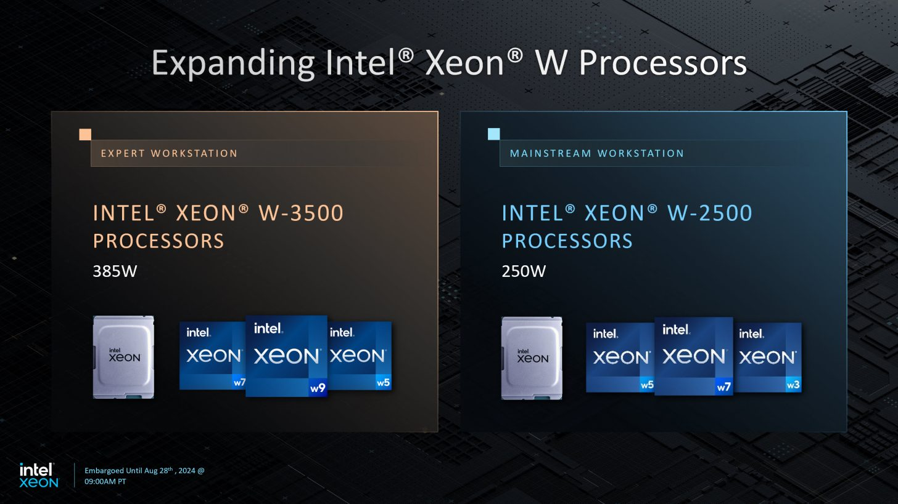

Intel Xeon W-3500 dan Xeon W-2500
Menurut penjelasan dari Chandler, kedua prosesor dengan kode nama Sapphire Rapid Refresh ini menggunakan arsitektur Intel 7 dan memiliki jumlah inti hingga 60 inti untuk seri Xeon W-3500 serta hingga 26 inti untuk seri Xeon W-2500. Selain itu, keduanya dilengkapi dengan teknologi Intel® Turbo Boost Max 3.0, yang memungkinkan frekuensi CPU mencapai 4,8 GHz. Fitur-fitur lainnya juga termasuk 3rd Gen Intel® Deep Learning Boost dan Advanced Matrix Extensions (AMX).
Untuk spesifikasinya sendiri, prosesor-prosesor ini mendukung RAM DDR5 ECC RDIMM hingga 4800 mt/s, dan untuk seri W-3500, diklaim dapat dipasangkan hingga 4 TB RAM. Bagi yang penasaran dengan kedua seri prosesor ini, Intel Xeon W-3500 series terdiri dari w9-3595x sebagai opsi tertingginya, sementara w5-3525 menjadi varian yang lebih terjangkau. Sedangkan untuk Intel Xeon W-2500 series, terdapat w7-2595x sebagai pilihan top tier dan w3-2525 untuk kelas entry level. Untuk detail lebih lanjut mengenai kedua prosesor ini, Anda dapat melihat tabel berikut